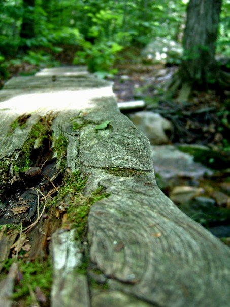

If you're eager to spend some quality time in nature, Colebrook, CT is the perfect destination for you.
You can find beautiful views any time of year, whether you're looking for snowy mountains or sunsets on the lake.
-----***-----
Interested in spotting animals in the wild? You might come across a beaver at dawn, deer in the woods, or even a black bear eating out of someone's trash can!
In the summer, you can go fishing, take a hike, or just relax in front of a gorgeous view.
Winter calls for cross-country skiing, ice-fishing, and snow-shoeing.